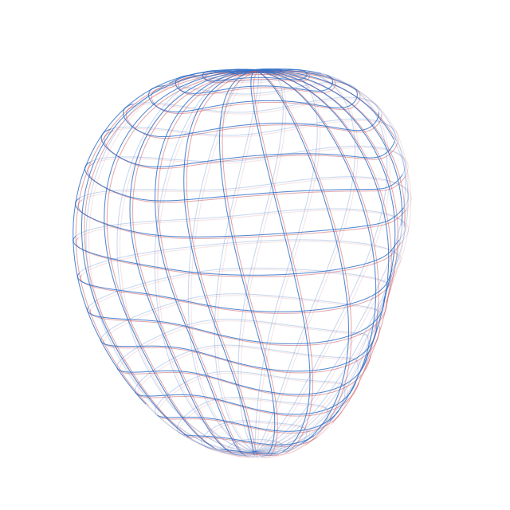

Bike workshop assistant
Answers prices and hours in three languages, hands repairs to staff with the photos, and sends quotes the customer can accept.
77 automated checks, 45 steps through n8n
Code ↗Chat and voice assistants that answer your customers, automations that handle emails and invoices, and internal tools that replace spreadsheets. Each one tested on real data before you rely on it.
Live app on the App Store and Google Play. Public demos with tests and code.

Three demos you can watch, run and read the code of.
Answers prices and hours in three languages, hands repairs to staff with the photos, and sends quotes the customer can accept.
77 automated checks, 45 steps through n8n
Code ↗Nora answers spoken questions for a dental practice in English or Slovenian and books appointments, only after the caller says yes.
14 of 14 test calls, about 2 s per reply
Code ↗Emails, PDFs and photos of invoices turned into structured data. Totals are checked in code and a person approves each record.
103 of 103 fields, about $0.001 per document
Code ↗Products I designed and built.
Live on the App Store and Google Play
A communication app for nonverbal children and adults. They tap pictures and the app speaks for them in Georgian, with the right word forms.
Flutter · Firebase · Gemini text-to-speech · ML Kit
In development, private Android alpha
A Georgian learning app: a path of short lessons from the alphabet to conversations, with spoken audio and letter tracing.
Flutter · Gemini text-to-speech · Python content pipeline
Built for a client: one app for projects, daily job cards, crews, materials and hours, replacing Excel sheets and group chats. Staff describe a job in their own words and AI turns it into a job card.
Power Apps · SharePoint · Azure OpenAI
Runs on the company's own computer and answers in Slovenian or English with links to sources. 15 of 15 test questions, plus 11 of 11 new ones.
Qdrant · Ollama · hybrid search · code ↗
Finds leads, checks public registers, sends outreach, handles replies and writes PDF offers, with a person approving each one. Built for a client.
Python · Microsoft Graph
Send a few lines about what you need. I reply within a day and give a fixed quote.
cesicobrad@gmail.com